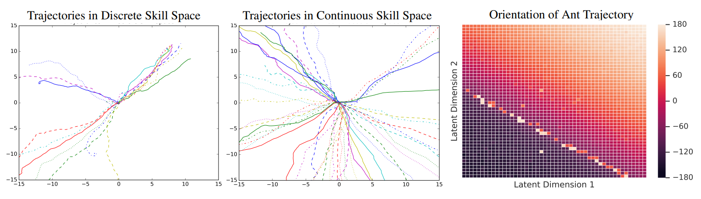

public:: true
state diversity
RND: random network distillation (2018)
- https://openai.com/blog/reinforcement-learning-with-prediction-based-rewards/
- This is a plug-and-play method to add state-exploration reward to any RL algorithm.
- The idea is to initialize two functions: a “random representation” and a “predictor”, both with the same network structure.
- The random representation function \(f(s)\) is initialized at the start and never changed. It takes in a state \(s\) from the environment, and computes a meaningless representation out of it.
- The predictor \(f_\theta(s)\) is supervise-learned to approximate \(f\). The parameter \(\theta\) is learned.
- Out of the random representation and predictor, we construct an “exploration critic”, which computes an exploration reward as the prediction error, such as L2 error: \[r^{explore}_t := \|f_\theta(s_t) - f(s)\|^2\]
- The paper also recommends that, if the agent is run without external reward (that is, it is purely maximizing exploration reward), then it should be run as one long episode, rather than cut into many episodes. The idea is that during pure exploration, game overs are at most a temporary lull in exploration, and nothing more than that.
- results
- Solves the “noisy TV” problem. Instead of trying to predict the next frame, the predictor tries to predict what the random network would output. This is much easier since \(f_\theta\) and \(f\) have the same structure. If the agent stays in front of a noisy TV long enough, the predictor \(f_\theta\) would actually manage to accurately predict \(f\), and the agent would lose interest in the TV.
- Solving Montezuma’s Revenge level 1 with 500k parameter updates.
Mario–The intrinsic reward is particularly well-aligned with the game’s objective of advancing through the levels. The agent is rewarded for finding new areas because the details of a newly found area are impossible to predict. As a result the agent discovers 11 levels, finds secret rooms, and even defeats bosses.
once it obtains all the extrinsic rewards that it knows how to obtain reliably (as judged by the extrinsic value function), the agent settles into a pattern of behavior where it keeps interacting with potentially dangerous objects. For instance in Montezuma’s Revenge the agent jumps back and forth over a moving skull, moves in between laser gates, and gets on and off disappearing bridges. We also observe similar behavior in Pitfall!. It might be related to the very fact that such dangerous states are difficult to achieve, and hence are rarely represented in agent’s past experience compared to safer states.
goal reweighting (skew-fit) (2018)
- maximize mutual information between goal \(z\) and episode-final state \(s_T\)
- BIB.
- Nair, Pong, Bahl, Dalal, Lin, L. Visual Reinforcement Learning with Imagined Goals. (2018)
- Dalal, Pong, Lin, Nair, Bahl, Levine. Skew-Fit: State-Covering Self-Supervised Reinforcement Learning. (2019)
- The objective is to maximize the [[mutual information]] between goal \(z\) and episode-final state \(S\) \[I(z; s_T) = H(p(z)) - H(p(z|s_T))\]
- \(p(z)\) is the probability of the goal \(z\). It is usually fixed to uniform or standard gaussian.
- \(p(z|s_T)\) is the probability of the goal conditional on the final state.
- \(I(z; s_T)\) is improved by simultaneously increasing the variety of goals and decreasing the uncertainty in goal conditional on the final state.
- In particular, it is maximized if we have a uniform distribution over goals (perfect variety of goals), and a bijection between goals and final states (perfect ability to achieve goals).
- Generally, the goal states \(z\) live in a low-dimensional manifold of a high-dimensional space (as when the goal states are natural-looking photos), which means we should use variational inference.
- \(s_T\): end-state
- \(z\): latent representation of goal
- \(\pi_\xi(a|s, s_g)\): goal-conditioned policy.
- \(p_{\theta}(s_T|z)\): forward model. It estimates the distribution of final-state, conditional on goal.
- \(q_\phi(z|s_T)\): backward model. It estimates the distribution of goal, conditional on final-state.
- The key to goal reweighting is to reweight the goals such that rarely visited states are given extra weight. In effect, this makes our goal-generator to favor novelty.
- ALGO.
- run in parallel
- Note that the algorithm is meant to be used on-policy, so the replay buffer should be small.
- data loop
- sample \(z\sim p(z)\), sample \(s_g \sim p_\theta(x_g | z)\).
- collect rollouts in real environment using the \(s_g\)-goal-conditioned policy
- add to replay buffer
- actor loop
- sample trajectory \((s_ta_t)_t\) from replay buffer with goal-state \(s_g\).
- use policy gradient to improve goal-conditioned policy \(\pi_\xi(a|s, s_g)\).
- variational inference loop
- sample tuples of goal and end-state \((z_i, s_{T, i})\) from replay buffer
- optimize \[\argmax_{\phi, \theta}\sum_i E_{z_i\sim q_\phi(\cdot | s_{T, i})}[( p(z_i)p_\theta(s_{T, i} | z_i))^\alpha\cdot \ln p(z_i)p_\theta(s_{T, i} | z_i) - \ln q_\phi(z_i|s_{T, i})]\]
- where \(\alpha \in [-1, 0)\) is a hyperparameter adjusting how eagerly we want the model to seek novelty.
- run in parallel
- It is proved in the references that for any \(\alpha \in [-1, 0)\), the entropy of end-state \(H(p_\theta(x))\) increases, and converges to uniform distribution over all reachable goals.
SMM: State Marginal Matching (2019)
- minimize KL-divergence between a distribution \(p^*\) over states, and the state-marginal distribution \(p_\pi\) from rollouts of policy \(\pi\)
- BIB.
- Lee, Eysenbach, Parisotto, Xing, Levine, Salakhutdinov. Efficient Exploration via State Marginal Matching (2019)
- Hazan, Kakade, Singh, Van Soest. Provably Efficient Maximum Entropy Exploration
- {:height 275, :width 585}
- idea
- Suppose we are given a distribution \(p^*\) over state space, such as the uniform distribution, and we seek a policy \(\pi\) such that, by running policy \(\pi\), we obtain an episode-final state distribution \(p_\pi(s)\) that minimizes \[D_{KL}(p^* \| p_\pi)\]
- This is equivalent to \[\max_\pi E_{s\sim p_\pi}[\ln p^*(s) - \ln p_\pi(s)]\]
- which can be interpreted as a kind of reward maximization with added novelty bonus
- \(\ln p^*(s)\) is the reward
- \(-\ln p_\pi(s)\) is the novelty bonus (or boredom punishment)
- ALGO.
- INPUT. the desired state marginal distribution \(p^*\)
- data loop
- rollout actor in the environment, add to replay buffer
- Note that we don’t sample environment rewards (or require it at all), since the rewards are computed on the fly here.
- We also don’t worry about the replay buffer becoming off-policy, because this algorithm does not distinguish on/off-policy.
- rollout actor in the environment, add to replay buffer
- “critic” loop
- sample states \((s_t)_t\) from replay buffer
- Note that we only use the states, not the actions \(a_t\). This is why it’s called a “state marginal distribution”.
- fit \(p_{\theta}\) to samples \((s_t)_t\) by supervised learning
- sample states \((s_t)_t\) from replay buffer
- actor loop
- sample trajectories \((s_ta_ts_{t+1})_t\) from replay buffer
- compute rewards \(\tilde r_t := \ln p^*(s_{t+1}) - \ln p_{\theta}(s_{t+1})\).
- use policy gradient to improve \(\pi_\phi\)
- RETURN. \(\pi^* := \sum_k \pi_k\)
- This algorithm does the right thing by some game theory about self-play and Nash equilibrium. See bibliography.
noisy exploration
epsilon-greedy
- The baseline algorithm.
multiarmed bandit algorithms
- like Gittins index or Thompson sampling
- Doesn’t work as well for RL situations, but a good baseline.
noisy parameters
- BIB.
- Noisy networks for exploration (2017)
- Parameter Space Noise for Exploration (2017)
- https://openai.com/blog/better-exploration-with-parameter-noise/
- {:height 236, :width 315}
- Use noisy neural networks for exploration, instead of ϵ-greedy exploration.
- This looks like a cheap approximation to Bayesian neural networks.
- Used in rainbow DQN (2018), which is a strong baseline for all future Q-learning methods.
- ALGO.
- The affine layers of the neural network are no longer \(Ax + b\), but \((A_\mu + A_\sigma \epsilon)x + (b_\mu + b_\sigma \epsilon)\), where \(\epsilon\) is a standard random vector, distributed as standard normal/uniform distribution.
- The neural network is trained exactly as before by gradient descent, using the reparametrization trick.
- The neural networks are used exactly as before, except that every time you use it, you first sample \(\epsilon\).
- BIB.
skill diversity
diversity is all you need (DIAYN)
- https://github.com/haarnoja/sac/blob/master/DIAYN.md
- BIB. ✅Eysenbach, Gupta, Ibarz, Levine. Diversity is All You Need: Learning Skills without a Reward Function (2018)
- problem
- A skill is a latent-conditioned policy that alters that state of the environment in a consistent way.
- We want each skill to be individually distinct and that the skills collectively explore large parts of the state space.
- solution
- maximize an information theoretic objective using a [[maxent]] policy, to force our skills to be diverse.
- fix the prior distribution over skills to prevent our method from collapsing to sampling only a handful of skills.
- define “distinction” between skills as the distinction between their state trajectories, not end-states, or action-trajectories.
- Note that maxent action + state trajectory distinction => state space exploration, lest the randomness in its actions lead it to states where it cannot be distinguished
- previous work
- VIME
- whereas DIAYN explicitly skills that effectively partition the state space, VIME attempts to learn a single policy that visits many states.
- For all tasks, DIAYN learns some skills that perform well. In contrast, a single policy that maximizes an exploration bonus (VIME) performs poorly on all tasks.
- empowerment
- Mohamed & Rezende (2015) and Jung et al. (2011) use the mutual information between states and actions as a notion of empowerment for an intrinsically motivated agent.
- Our method maximizes the mutual information between states and skills, which can be interpreted as maximizing the empowerment of a hierarchical agent whose action space is the set of skills.
- VIME
- SETUP.
- \(Z\sim p\): skill, where \(p\) is a fixed distribution.
- \(A\): action
- \(S\): state
- DIYAN objective
- \[\begin{aligned} \mathcal{F}(\theta) & \triangleq I(S ; Z)+\mathcal{H}[A \mid S]-I(A ; Z \mid S) \\ &= I(S ; Z)+ \mathcal{H}[A \mid S, Z]\\ &=(\mathcal{H}[Z]-\mathcal{H}[Z \mid S])+\mathcal{H}[A \mid S, Z] \end{aligned}\]
- interpretation:
- \(I(S;Z)\): the skill should control the state (“discriminability”)
- \(\mathcal{H}[A \mid S, Z]\): the action should be diverse even knowing both state and skill (“exploration”/“entropy regularization”)
- \(\mathcal{H}[A \mid S]\): the action should be diverse even when the state is known.
- \(-I(A ; Z \mid S)\): knowing the state should be all that is needed to know the . This is to compel that states, not actions, are used to distinguish skills.
- DIYAN objective, modified for implementation
- First, use the [[variational inference]] trick
- For any \(q_\phi\), we have to maximize:
- \[\begin{aligned} \mathcal{F}(\theta) &=\mathcal{H}[A \mid S, Z]-\mathcal{H}[Z \mid S]+\mathcal{H}[Z] \\ &=\mathcal{H}[A \mid S, Z]+\mathbb{E}_{z \sim p(z), s \sim \pi(z)}[\log p(z \mid s)]-\mathbb{E}_{z \sim p(z)}[\log p(z)] \\ & \geq \mathcal{H}[A \mid S, Z]+\mathbb{E}_{z \sim p(z), s \sim \pi(z)}\left[\log q_\phi(z \mid s)-\log p(z)\right] \triangleq \mathcal{G}(\theta, \phi) \end{aligned}\]
- Next, when in doubt, parametrize
- Since \(I(S;Z)\) is for skill “diversity”, and \(\mathcal{H}[A \mid S, Z]\) is for “exploration” (entropy regularization to make action as random as possible), we can adjust their weighting by using a parameter \(\alpha>0\)
- \[\begin{aligned} \mathcal{F}(\theta, \alpha) & \triangleq I(S ; Z)+\alpha \mathcal{H}[A \mid S, Z]\\ & \geq \alpha\mathcal{H}[A \mid S, Z]+\mathbb{E}_{z \sim p(z), s \sim \pi_\theta(z)}\left[\log q_\phi(z \mid s)-\log p(z)\right] \\ & = \mathbb{E}_{z \sim p(z), s \sim \pi_\theta(z)}\left[\log q_\phi(z \mid s)-\log p(z)- \alpha \ln \pi_\theta(a|s, z)\right] \\ & \triangleq \mathcal{G}(\theta, \phi, \alpha) \end{aligned}\]
- This is exactly soft actor-critic with “Q function” \(r = \log q_\phi(z \mid s)-\log p(z)\) and temperature \(\alpha\).
- Assuming our discriminator \(q_\phi\) is better than chance, subtracting the \(\ln p(z)\) baseline ensures our reward function is always non-negative, encouraging the agent to stay alive. Without this baseline, an optimal agent would end the episode as soon as possible.
We found empirically that α = 0.1 provided a good trade-off between exploration and discriminability.
- Finally, priors can be hard-coded by featurizing the state space.
- The discriminator maximizes \(E[\log q_\phi(z | f(s))]\).
- For example, in the ant navigation task, \(f(s)\) could compute the agent’s center of mass, and DIAYN would learn skills that correspond to changing the center of mass.
- First, use the [[variational inference]] trick
- theory
- On gridworlds, we can compute analytically that the unique optimum to the DIAYN optimization problem is to evenly partition the states between skills, with each skill assuming a uniform stationary distribution over its partition.
- In the continuous and approximate setting, even standard RL methods with function approximation (e.g., DQN) lack convergence guarantees, yet such techniques are still useful.
- results
- robust to random seed; varying the random seed does not noticeably affect the skills learned, and has little effect on downstream tasks
- unsupervised pre-training for more sample-efficient finetuning of task-specific policies.
- forced by diversity, some skills are good at getting rewards despite never trained on them.
- imitation learning
- Given a state trajectory \(s_{1:T}\), we can infer the max-aposteriori skill used to accomplish it. If we use [[naive Bayes]] approximation, we get \[\hat z = \argmax_z p(z)\prod_t q_\phi(z|s_t)\]
- ALGO.
- INTP. This is similar to maximizing \(\sum_t I(z, s_t)\), the mutual information between the skill and the trajectory.
Dynamics-Aware Discovery of Skills (DADS)
- https://github.com/google-research/dads
- BIB. ✅Dynamics-aware unsupervised discovery of skills (2019)
- IDEA. [[model-based RL]] using DIAYN
- training time
- use DIAYN to learn a bunch of skills as \(\pi_\theta(a|s, z)\), while at the same time learn a skill-dynamics model as \(\text{state-transition}(s'|s, z)\)
- inference time
- Given reward function \(r\),
- use [[model predictive control]] with the state-transition model to plan for the best skill \(z\) to use at every step.
- training time
- theory
- We want to maximize \(I(s'; z | s)\). That is, given current state, we want the skill to create maximally different next states.
- practice
- can scale to high-dimensional problems
- discovered skills useful for hierarchical composition
- works even for very sparse reward (as in Ant going to distant shiny balls)
- For dense reward navigation, we observe that while model-based planning on DADS-learned skills degrades smoothly as the initial distance to goal to increases, goal-conditioned RL experiences a sudden deterioration outside the goal distribution it was trained on. Even within the goal distribution observed during training of goal-conditioned RL model, skill-space planning performs competitively to it. With sparse reward navigation, goal-conditioned RL is unable to navigate, while MPPI demonstrates comparable performance to the dense reward up to about 20 metres.
- continuous skill space is more diverse, more amenable to hierarchical composition, and generally perform better on downstream tasks.
- 
- discovered stable skills
- {:height 347, :width 438}
- While the Half-Cheetah will learn to run in both backward and forward directions, DADS will disincentivize skills which make Half-Cheetah flip owing to the reduced predictability on landing. Similarly, skills discovered for Ant rarely flip over, and tend to provide stable navigation primitives in the environment. This also incentivizes the Humanoid, which is characteristically prone to collapsing and extremely unstable by design, to discover gaits which are stable for sustainable locomotion.
- hierarchical planning competitive to strong baselines.
- How to get DADS from DIAYN
- Replace the skill-guesser \(q_\phi(z|s')\) by the state-transition probability model \(q_\phi(s' | s, z)\). It is unnormalized, so remember to use: \[ \frac{q_\phi\left(s^{\prime} \mid s, z\right)}{\sum_{i=1}^L q_\phi\left(s^{\prime} \mid s, z_i\right)}\]
- That’s pretty much it.
- ALGO.
\[ \max_{\theta, \phi}\;\mathbb E_{z \sim p(z), s \sim \pi_\theta(z)}\left[\log \frac{q_\phi\left(s^{\prime} \mid s, z\right)}{\sum_{i=1}^L q_\phi\left(s^{\prime} \mid s, z_i\right)}+\log L- \alpha \ln \pi_\theta(a|s, z)\right]\]
\[r_z\left(s, a, s^{\prime}\right)=\log \frac{q_\phi\left(s^{\prime} \mid s, z\right)}{\sum_{i=1}^L q_\phi\left(s^{\prime} \mid s, z_i\right)}+\log L, \quad z_i \sim p(z)\]
Note that while it says “update \(\pi\) using any RL algorithm”, the paper itself uses soft actor-critic.
We also introduce entropy regularization for π(a | s, z), which encourages the policy to discover action-sequences with similar state-transitions and to be clustered under the same skill z, making the policy robust besides encouraging exploration (Haarnoja et al., 2018a). The use of entropy regularization can be justified from an information bottleneck perspective as discussed for Information Maximization algorithm in (Mohamed & Rezende, 2015).
image.png When the space of \(z\) is continuous, the update for the parameters follows that in Model Predictive Path Integral (MPPI) controller.
- The planner keeps track of a sequence of \(H_P\) normal distributions: \(N(\mu_i, \Sigma)\), where \(\Sigma\) is some fixed/learned parameter.
While we keep the covariance matrix of the distributions fixed, it is possible to update that as well as shown in Williams et al. (2016).
- Every planning step, the planner samples \(K\) skill-plans \((z_{k, 1:H_P})_{k\in 1:K}\), and run them through the state-transition function \(q_\pi\). Then use the reward function to compute the reward \(r_k\) of each skill-plan \(z_{k, 1:H_P}\).
- After that, update the sequence \(\mu_{1:H_P}\) by the following Boltzmann average:
- \[\mu_i=\sum_{k=1}^K \frac{\exp \left(\gamma r_k\right)}{\sum_{p=1}^K \exp \left(\gamma r_p\right)} z_{k, i} \quad \forall i=1, \ldots H_P\]
- The planner keeps track of a sequence of \(H_P\) normal distributions: \(N(\mu_i, \Sigma)\), where \(\Sigma\) is some fixed/learned parameter.
off-policy DADS
- https://github.com/google-research/dads
- BIB. ✅Emergent real-world robotic skills via unsupervised off-policy reinforcement learning (2020)
- Just use importance sampling on the skill-transition model \(q_\phi(s'|s, z)\). Nothing is changed otherwise, not even the policy gradient method for \(\pi_\theta\).
- NOTE. the algorithm uses \(\pi_c\) (the policy at the time when the datapoint was sampled) even for the \(\pi\) update loop, but it’s actually useless.
- {:height 461, :width 314}
- result: DADS work on a real robot, taking just 20 hours to learn walking in multiple gaits and directions (0.3 million data points). the skills are relatively robust and fall in only 5% of the runs.
- off-policy variant of DADS that exhibits stable and sample-efficient learning
- locomotion skills with diverse gaits and different orientations emerge without any rewards or demonstrations.
latent space model
- CURL: Contrastive unsupervised representations for reinforcement learning (2020)
- Rather complex and does not appear to be better than RAD: Reinforcement learning with augmented data. See Table 1 of RAD paper.
- PlaNet (2019): planning in latent space, not picture space. Learn a [[variational autoencoder]]. MuZero for one-player RL. Inspired MuZero (2020). collapsed:: true
- https://ai.googleblog.com/2019/02/introducing-planet-deep-planning.html
- BIB. Learning Latent Dynamics for Planning from Pixels (2019)
- {:height 292, :width 438}
- The Dreamer series (2019–2022) collapsed:: true
- BIB.
- Dream to control: Learning behaviors by latent imagination (2019)
- Mastering atari with discrete world models (2021): Dreamer V2, demo on Atari games.
- Daydreamer: World models for physical robot learning (2022): DayDreamer, demo on robots.
- Deep Hierarchical Planning from Pixels (2022): Director, demo on 3D games
- General idea
- Sample rollouts from the replay buffer to learn a world model by supervised learning.
- Use “dreamed” rollouts on the world model to learn an actor-critic agent.
- Since the actor-critic agent is learned dreamed rollouts, it does not use the replay buffer, and so it is always on-policy.
- Other agents should be fine, though the authors have only tried actor-critic agents.
- Exploration-reward can be computed from the world model by the uncertainty in the world model. This can be accomplished in many ways.
- We can keep a few world models, and ask them all to predict the action outcome, and use the variance of their predictions. This is the approach in plan2explore.
- We can compute the reconstruction error if the world model is an autoencoder. This is the approach in Director.
- We can use Bayesian inference if the world model is a Bayesian model. This is the approach of… something, I’m sure. Perhaps “Bayesian PlaNet”, though I can’t find any paper.
- Dreamer v1 (2019)
- https://danijar.com/project/dreamer/
- result
- We use a single Nvidia V100 GPU and 10 CPU cores for each training run. The training time for our Dreamer implementation is about 3 hours per \(10^6\) environment steps on the control suite, compared to 11 hours for online planning using PlaNet, and the 24 hours used by D4PG to reach similar performance.
- notation
- \(o_t, a_t, r_t\): real observation, action, reward
- \(s_t\): latent representation of state
- model: 3 networks parametrized by \(\theta\), respectively of type:
- representation/observation \(p(s_t|s_{t-1}, a_{t-1}, o_t)\). This one has a CNN part (when observations are images)
- transition \(q(s_{t+1} | s_{t}, a_t)\), a GRU (the variant of [[LSTM]])
- reward \(q'(r_t | s_t)\)
- actor: \(\pi_\phi(a_t|s_t)\)
- critic: \(V_\psi(s_{t+H})\), to account for rewards beyond the planning horizon
- ALGO.
- run the following in parallel
- data loop
- Run epsilon-random version of model-actor \(pqq'_\theta, \pi_\phi\) on environment.
- To use the model-actor, first run the model on the trajectory-so-far to obtain the current latent state \(s_t\), then sample from policy \(\pi_\phi(a_t | s_t)\)
- add trajectories to replay buffer.
- Run epsilon-random version of model-actor \(pqq'_\theta, \pi_\phi\) on environment.
- model loop
- sample a batch of size \(B\), of length-\(L\) trajectory-segments \((o_ta_tr_t)_{t=t_0:t_0+L}\) from replay buffer
- train model on the batch of samples by supervised learning
- To “kickstart” the representation model \(p(s_{t_0+1}|s_{t_0}, a_{t_0}, o_{t_0+1})\), I guess we can pretend that \(s_{t_0}\) is sampled from a standard gaussian distribution. (I didn’t find any mention of how they did it.)
- actor-critic loop
- rollout in the model (no need for the replay buffer!)
- train critic on the batch of samples by supervised learning (minimize MSE): \[\min_\psi \frac{1}{BL}\sum_t\left|V_\psi(s_t) - V_\lambda(s_t)\right|^2 \] where \(V_\lambda(s_t)\) is the the TD() estimator of \(V^{\pi_\phi}(s_t)\).
- maximize reward \(r_{t}+\cdots +\gamma^{H-1} r_{t+H-1} +\gamma^H V_\psi(s_{t+H})\)
- You can of course use policy gradient on \(\theta\), but since the latent space is pretty small, it is actually possible to use gradient descent directly on the total reward. \[\max_\phi(r_{t}+\cdots +\gamma^{H-1} r_{t+H-1} +\gamma^H V_\psi(s_{t+H}))\]
- As in SAC, the action model outputs a tanh-transformed gaussian, defined by its mean and std (before the tanh-transform). Use the [[reparametrization trick]] to backprop the gradient to the mean and std of the gaussian.
- Make sure the gradient doesn’t propagate into the parameters of the model
- Dreamer v2 (2021): Dreamer V1 but discrete. Human-level Atari in 10 GPU days (Nvidia V100)
- https://danijar.com/project/dreamerv2/
- changes compared to Dreamer V1
- latent space is discrete rather than continuous
- The distributions over latent space are categorical rather than gaussian.
- model now has 5 components, trained jointly to minimize one big loss.
- The loss contains some KL-divergences, thus “min KL” in the diagram.
- The “discount predictor” is an odd addition. It is not used in any of the other papers.
- {:height 112, :width 470}
- critic is still a \(V_\psi\) network, trained by minimizing MSE with the TD() target.
- actor, to use discrete variables, now uses “straight-through estimator gradient”.
- DreamerV1 relied entirely on reparameterization gradients to train the actor directly by backpropagating value gradients through the sequence of sampled model states and actions.
- DreamerV2 uses both discrete latents and discrete actions. To backpropagate through the sampled actions and state sequences, we leverage straight-through gradients. This results in a biased gradient estimate with low variance.
- DayDreamer (2022): application of DreamerV2 to 4 real-world robots. No new algorithm.
- https://danijar.com/project/daydreamer/
- actor training
- reparameterization gradients for continuous control tasks and Reinforce gradients for tasks with discrete actions
- robot details
- robot dog walking
- we train in the end-to-end reinforcement learning setting directly on the robot, without simulators or resets.
- We use the Unitree A1 robot that consists of 12 direct drive motors. The motors are controlled at 20 Hz via continuous actions that represent motor angles that are realized by a PD controller on the hardware. The input consists of motor angles, orientations, and angular velocities. To protect the motors, we filter out high-frequency motor commands through a Butterworth filter.
- we manually intervene when the robot has reached the end of the available training area, without modifying the joint configuration or orientation that the robot is in.
- robot arm picking
- We estimate human performance by recording 3 demonstrators for 20 minutes, controlling the UR5 with a joystick.
- Dreamer reaches an average pick rate of 2.5 objects per minute within 8 hours. The robot initially struggles to learn as the reward signal is very sparse, but begins to gradually improve after 2 hours of training
- Both Rainbow DQN and PPO only learn the short-sighted behavior of grasping and immediately dropping objects in the same bin. In contrast, Dreamer approaches human-level performance after 8 hours
- robot dog walking
- Discovering and Achieving Goals via World Models (2021): using DreamerV2 with plan2explore. It performs slightly better (?) than plan2explore.
- It has 4 components: world model (as in Dreamer), an ensemble of one-step world model (), explorer (as in plan2explore), achiever (goal-conditioned policy).
- The explorer is a RL agent whose reward is the variation between the one-step world models predictions.
- The ensemble of world models are trained on real rollouts (not dreamed rollouts).
- It has 4 components: world model (as in Dreamer), an ensemble of one-step world model (), explorer (as in plan2explore), achiever (goal-conditioned policy).
- Director (2022): DreamerV2, but hierarchical, and with exploration reward.
- https://ai.googleblog.com/2022/07/deep-hierarchical-planning-from-pixels.html
- notation
- \(x_t, a_t, r_t\): real environment state, action, reward
- \(s_t\): world model state
- \(z\): goal
- \(g\): decoded goal, that is, \(g = dec_\phi(z)\)
- \(\theta\): parameter of the world model.
- \(\phi\): parameter of the goal autoencoder.
- \(\psi\): parameter of the manager policy.
- \(\xi\): parameter of the worker policy.
- ALGO.
- run 4 threads in parallel.
- The replay buffer is used by the world model and goal autoencoder.
- For the manager and worker, no off-policy correction is needed, because they don’t use the replay buffer at all, but only train on imagined rollouts.
- rollout loop: add trajectory to replay buffer.
- world model loop
- This is trained exactly as in PlaNet, where the world model \(s_t\) is a 1024-dim vector.
- sample batch from replay buffer, supervised learning
- goal autoencoder loop
- This is trained exactly as a VQVAE, where the middle layer \(z\) is a 8x8 binary matrix.
- sample batch from replay buffer, supervised learning
The goal encoder takes a model state as input and predicts a matrix of 8×8 logits, samples a one-hot vector from each row, and flattens the results into a sparse vector with 8 out of 64 dimensions set to 1 and the others to 0
- manager-worker loop
- Both manager and worker are actor-critic agents, trained jointly on rollouts in the world model (“dreaming”).
- The critics are trained by TD() learning. The actors are trained by policy gradient.
- The manager’s actor is \(\pi_\psi(z|s_t)\). The manager has two critics, one for exploration reward \(V^{explore}_\psi(s_t)\), another for discounted environment reward \(V^{env}_\psi(s_t)\).
- The worker’s actor is goal-conditioned \(\pi_\xi(a_t|s_t, g)\). The worker’s critic is a goal-conditioned \(V_\xi(s_t | g)\).
- The manager’s reward = (discounted environment reward + exploration reward).
- “exploration reward” is defined as goal autoencoder reconstruction error: \[r_t^{explore} := \|dec_\phi(z) - s_{t+1}\|^2\quad z\sim enc_\phi(s_{t+1})\]
- The worker’s reward = (max-cosine-similarity between the goal state and the world state).
- Why “max-cosine-similarity”? The authors explained it as a useful hack that simply worked better than cosine-similarity or negative L2 distance.
- \[r_t^{goal}:= \frac{\langle g, s_{t+1}\rangle}{\max(\|g\|, \|s_{t+1}\|)^2}\]
- The worker can be given the discounted environment reward too. This would require it to also have two critics (like the manager). This increases the performance of the algorithm.
- Both manager and worker are actor-critic agents, trained jointly on rollouts in the world model (“dreaming”).
- run 4 threads in parallel.
- comparison
image.png Plan2Explore
- maximizes both task reward and an exploration bonus based on ensemble disagreement
- Plan2Explore fails because the robot flips over too much, a common limitation of low-level exploration methods.
Dreamer
- maximizes the task reward.
- reaches the goal in the smallest maze but fails to explore the larger mazes
- BIB.
- Plan2Explore (2020): train a few latent env models; exploration reward as info-max; infogain approximated as variation of the model predictions.
- BIB. Planning to explore via self-supervised world models (2020)
- idea
- Plan2Explore works by training a world model, exploring to maximize the information gain for the world model, and using the world model at test time to solve new tasks.
- To estimate infogain, keep \(K\) world models in parallel, and estimate infogain of doing action \(a_t\) at step \(s_t\) as \(Var[w_1(s_t, a_t), ..., w_K(s_t, a_t)]\) the variation in the predictions of the world models.
- Given a reward function, we use the model to optimize a policy for that task. Similar to our exploration procedure, we optimize a new value function and a new policy head for the downstream task. This optimization uses only predictions imagined by the model.
- ALGO.
- CURL: Contrastive unsupervised representations for reinforcement learning (2020)
intrinsic reward
uncategorized/inspirational/procrastinational
- Hindsight experience replay (2017) collapsed:: true
- https://github.com/TianhongDai/hindsight-experience-replay
- Not actually about exploration, but it uses hindsight pseudo-reward, which is similar to exploration pseudo-reward.
- ALGO.
- data loop
- sample goal \(g\)
- rollout a trajectory using the goal-conditioned policy \(\pi(a|s, g)\)
- compute a goal \(g'\) that the trajectory has actually achieved
- relabel every step of the trajectory with goal \(g'\)
- recompute the rewards \(r'_t\) with respect to that trajectory
- add trajectory to the replay buffer
- goal-conditioned policy loop
- sample from replay buffer; use policy gradient
- data loop
- [[soft actor-critic]] (2018)
- Not an exploration algorithm itself. By itself, it is an off-policy model-free RL algorithm, but can be easily extended by other methods, such as adding other exploration rewards.
- distributional RL critic (2018)
- BIB.
- Distributional Reinforcement Learning with Quantile Regression (2018)
- https://www.distributional-rl.org/
- instead of \(V(s_t)\) or \(Q(s_t, a_t)\), learn a probability distribution \(\hat Q(s_t, a_t)\), which approximates the probability distribution of \(r_t + \gamma r_{t+1} + \cdots\). The idea is that since everything else in AI is distributional (policy network, AlexNet, etc), why not Q and V?
- A success story is quantile regression SAC, which is used in training Gran Turismo Sophy, a superhuman agent at the driving game Gran Turismo (2022).
- BIB.
- Unsupervised Intelligent Agents - YouTube
- a tantalizing but mysterious talk about a way to classify a lot of RL exploration algorithms. Not directly relevant.
- H-JEPA: A path towards autonomous machine intelligence (Yann LeCun, 2022)
- BIB.
- Idea
- Humans and Animals learn hierarchies of models
- not model-free RL, not pure reflex loop, not pure sensorimotor loops
- the models are arranged in a hierarchy, rather than in one big network, or a big “flat” network.
- a non-contrastive self-supervised learning paradigm that produces representations that are simultaneously informative and predictable
- JEPA is not a generative model
- JEPA learns a hierarchy of representations, but not contrastively learned.
- Humans and Animals learn hierarchies of models
- FIG. the JEPA architecture
- 2 cost modules (both differentiable)
- intrinsic cost: untrainable, hardwired; inborn aversion and liking; corresponds to \(r(s, a)\).
- critic cost: trainable; acquired aversion and liking; corresponds to \(V(s)\) and \(Q(s, a)\).
- perception modules
- world model
- The world model is one big model, composed of many small models. Each small model is a “JEPA”, an energy-based model
- FIG. a JEPA model
- {:height 245, :width 415}
- FIG. two levels of JEPA put together
- {:height 301, :width 439}
- 2 actor modes
- mode 1: reward-less reflex loop
- {:height 196, :width 442}
- mode 2: model-predictive control for reward maximization
- mode 1: reward-less reflex loop
- training JEPA
- self-supervised learning by “filling in the blanks” (cloze test, BERT style pretraining)
- go-explore (2019): applying graph search algorithm for RL exploration. collapsed:: true
- BIB.
- Go-explore: a new approach for hard-exploration problems (2019)
- First return, then explore (2021)
- problems of typical intrinsic motivation algorithms
- detachment

image.png agent explores frontier 1 half-way.
agent by random chance discovers frontier 2.
agent explores frontier 2 thoroughly, but in the mean time forgets frontier 1.
- derailment
- agent cannot explore deeply, because the epsilon-random exploration policy would tend to drive the agent off the path towards the frontier, with probability \(O(\epsilon T^2)\).
the needed precise actions are naively perturbed by the basic exploration mechanism, causing the agent to only rarely succeed in reaching the known state to which it is drawn, and from which further exploration might be most effective.
- detachment
- To solve these two problems, the go-explore algorithm uses ideas from graph search algorithms. It maintains a set of search frontiers, and try extending them one by one. If there is extrinsic reward, then there would be a phase 2 where the most rewarding path is constructed and a policy is trained to follow that path by [[imitation learning]].
- It is very much like an RL version of Dijkstra’s algorithm.
- ALGO. the go-explore algorithm
image.png image.png
- BIB.
- RAD: Reinforcement learning with augmented data (2020) collapsed:: true
Just use data augmentation on data. Can be applied to any RL (like how data augmentation can be applied to any supervised learning algorithm).
https://mishalaskin.github.io/rad/
Works very well for pixel-based RL, when combined with SAC or PPO.
- The data augmentation are the same as those used in training typical image-recognition neural networks: crop, jitter, RGB perturbation, etc.
- The key is to apply the exact same augmentation across all frames per trajectory-segment.
Works alright for state-based RL, when combined with SAC. Outperforms plain SAC.
- The authors tried 3 methods: random amplitude scaling with a single variable (RAS-S), random amplitude scaling with a multivariate variable (RAS-M), and Gaussian noise (GN). The authors stated that RAS-S should be better, because RAS-S preserves relative difference.
- For example, if your observation is
(x, y, z), then it is probably better to get((1+ε)x, (1+ε)y, (1+ε)z)than((1+ε)x, (1+ε')y, (1+ε'')z), since the previous one preserves(1+ε)x - (1+ε)y = (1+ε)(x-y)but the latter one would get(1+ε)x - (1+ε')y = ??? - That’s the theory. In practice, as Table 7 shows that RAS-S and RAS-M are 50-50 in performance, but both are better than GN or the other methods.
image.png
- scratchpad
- Actionable plan for the mid-term milestone report
- get an agent or two up and running
- Get SAC (soft actor-critic) up and running. It is probably the best off-policy model-free baseline. A PyTorch implementation can be found in Stable Baselines 3.
- Get plan2explore up and running. It’s a simple and powerful exploration-only baseline. There’s a PyTorch implementation here though I haven’t checked how well it is.
- get 4 test environments up and running
- We need two kinds of environments: continuous and discrete. For each, we need two kinds: simple and complex.
- I suggest the following test environments. All are OpenAI gym environments. All except crafter comes with Gym.
| simple | complex |
discrete | Toy Text | crafter |
continuous | inverted pendulum, Mountain Car | HalfCheetah, Humanoid |
- get a few simple variations up and running
- A few simple variations that I think would work and be easy to implement.
- Implement RND on an SAC agent.
- random network distillation is a very simple baseline for pure-exploration RL. Kind of like the random agent is a baseline for reward-based RL.
- https://github.com/sungyubkim/Deep_RL_with_pytorch
- Implement SAC for plan2explore.
- The original plan2explore paper use a standard actor-critic algorithm, not soft actor-critic algorithm. It does incorporate some tricks like tanh-transformed Gaussian, just like in the SAC paper.
- Implement RAD for plan2explore
- RAD: reinforcement learning with augmented data. This one applies only for continuous observation space. To use it, apply a random scaling to all observations, that is, changing \(o_t\) to \((1+\epsilon)o_t\).
- contemplate more speculative variations
- I haven’t thought up anything really new yet. New ideas are hard. Either they are boring and old or they are vague and impractical…
- get an agent or two up and running
- self-reflective/meta plan2explore
- A key problem of plan2explore is that the exploration policy \(\pi_\phi\) optimizes the exploration reward, but the exploration reward depends on the state of the world models, not the world. So the exploration policy is basically “chasing shadows”. Just as the exploration policy learns to visit state \(s\) often, the world models would have acquired enough information to make state \(s\) uninteresting to visit.
- My intuitive solution is to go self-reflective/meta: the exploration policy not only has access to current observation, but also current parameters of all the world models.
- Ideally, it would introspectively see the world models, and recognize directly which states are uninformative, and which are informative, and plan accordingly. It would thus avoid “chasing shadows”.
- However, since the world models have a few thousand parameters each, this will cost a lot of compute, unless there’s a clever trick somewhere, such as using hypernetworks (but that’s extremely complicated to use).
- Maybe we can also use model-predictive control for exploration. I am not sure whether this would lead to “math exam problem”.
- intrinsic value of hierarchical planning (absolute power corrupts absolutely)
- If an RL system is hierarchical, would there be intrinsic rewards for the hierarchical planning system? Say, would it be useful for the high level policies to be rewarded merely for making up difficult but barely accomplishable tasks for the low-level policies? (Or would it be useful to punish the high level policies instead?)
- intrinsic value of state-action pairs (action deontology, or performing good deeds)
- Are some actions “intrinsically more valuable” than other actions? Is there a way to define \(Q(s_t, a_t)\) intrinsically?
- intrinsic value of states (state deontology, or arriving at good states)
- Are some states “intrinsically more valuable” than other states? Is there a way to define \(V(s_t)\) intrinsically?
- A good state may be like the center of the room: somewhere that allows you to reach anywhere else quickly. An empowering state.
- go-explore
- What is the graph search algorithm used in the paper? What if we use A* algorithm?
- improve “Planning to explore via self-supervised world models (2020)” by swapping in “Reinforcement Learning with Augmented Data (2020)” in place of “PlaNet (2019)”
- As shown in “Reinforcement Learning with Augmented Data (2020)”, RAD achieved roughly 3 times performance compared to PlaNet.
- Problem: we are not going to actually use pixels in the RL learning… Answer: no problem. As shown in the paper, RAD also works for state-based (not pixel-based) inputs.
- As for whether we need to add SAC…? Yes, certainly. The RAD paper used SAC. The “planning to explore” paper did not – so let’s try it.
- Previous work: I did not find previous work combining RAD with planning to explore, so this would be something new. https://scholar.google.com/scholar?hl=en&as_sdt=2005&sciodt=0%2C5&cites=6008226201213548118&scipsc=1&q=%22plan2explore%22+OR+%22planning+to+explore%22
- Dreamer V2 might also be worth a shot. “DayDreamer: World Models for Physical Robot Learning (2022)” demonstrated it on a robodog. It learned to walk robustly in an hour. It was used with a hard-coded reward, but can obviously be applied to exploration-reward. (edited)
- Actionable plan for the mid-term milestone report
- Hindsight experience replay (2017) collapsed:: true